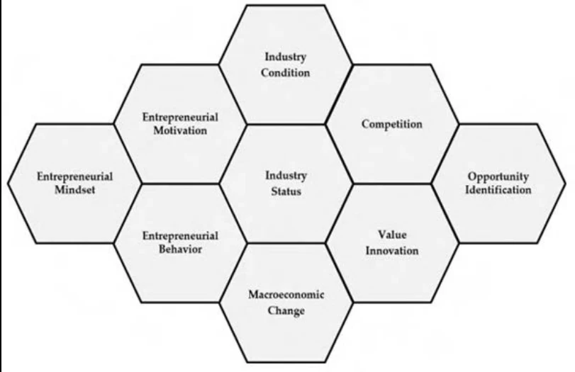

06 / Business strategy
Design & Entrepreneurship
A collection of entrepreneurial studies exploring how design methods support startup growth, market positioning and partnerships.

Taking ideas into the market
Alongside my master’s programme, I followed courses at the Delft Centre for Entrepreneurship. These studies extended my design practice into business models, market analysis and the organisational challenges faced by early-stage companies.

Learning across different ventures
Work involving Kitepower explored markets, stakeholders and the development of an airborne wind energy business. A study of Vattenfall’s startup programme considered intellectual property and corporate–startup collaboration. A team project for Rotterdam startup Stadsgrond explored a business model for circular bricks made from local clay.
Design as a strategic tool
The work used structured methods to identify growth priorities and possible next steps. It strengthened my interest in connecting product development with commercial viability, partnership structures and the timing of strategic decisions. These projects are analyses and recommendations, rather than claims of implemented business outcomes.